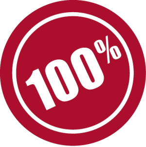

Страхотно кафе, страхотно настроение
Информация за нашето кафе

Селекцията и закупуването на кафето се осъществяват от Gian Luca Venturelli. Gian Luca лично опитва на вкус всички мостри, които пристигат във фабриката и често пътува в чужбина с цел посещение на плантации и производители на кафе.
Ние сме пряко отговорни за всеки етап от транспортирането на суровината до
нашите заводи. Някои висши сортове кафе, като Jamaica Blue Mountain, се транспортират в
малки дървени бъчви, за да се запази най-добре техния безспорен аромат.
Отделните сортове кафе са смесени във внимателно разработени пропорции. Нашите смеси са
резултат на дълго-годишни задълбочени изследвания от Gian Luca Venturelli и се
предлагат във видове, които могат да задоволят редица индивидуални вкусове. Освен нашите
смеси, предлагаме и особено престижни кафета с единичен произход (Jamaica Blue Mountain,
например).
При обработването на нашите кафета следваме занаятчийската практика: нежен процес на
печене, който гали кафето. Получаваме продукт с най-високо качество, който е
изключително здравословен: етеричните масла и аромати са защитени, и зърната в резултат
на това, са добре обработени - с малко остатъчна влага и ограничено съдържание на
кофеин.
Всички наши кафета са резултат от точни и задълбочени изследвания. Избираме най-добрите сортове кафе и ги обработваме в съответствие с италианската традиция за майсторското печене на кафе. Отнасяме се с изключителна грижа към нашето еспресо. И с всяка чаша … Вие можете да усетите това!